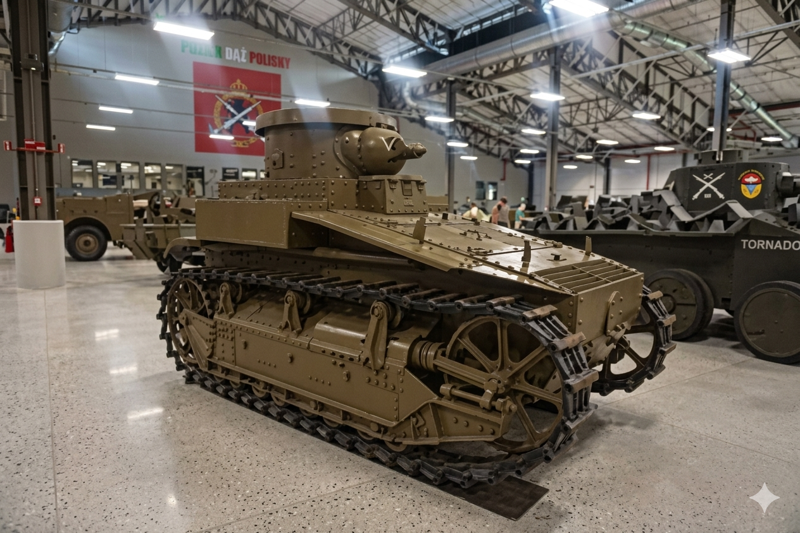

T1 Cunningham
Призначення: заміна більш раннього танка M1917. Країна: США. Роки випуску: 1926-1930. Кількість: ~10 шт. Озброєння: 37-мм гармата та спарений кулемет M1919 Браунінг калібру 7,62 мм. Броня: 12,7 мм. Маневреність: 29 км/год, 8-циліндровий карбюраторний двигун. Екіпаж: 2 особи. Особливість: T1 був основою для американського танкобудування. Він допоміг інженерам зрозуміти, як робити не треба, і заклав фундамент для створення пізнішого успішного легкого танка M2. Модифікації: T1E1: та сама машина, але з електричною трансмісією (GE). Саме цей варіант мав отримати індекс M6A2, але на озброєння його так і не прийняли. Візуально відрізнявся відсутністю кулеметів у корпусі на деяких етапах. T1E2: варіант з литим корпусом, але звичайною механічною трансмісією (крутний момент передавався через перетворювач). Став стандартизованим під назвою M6. T1E3: аналог T1E2, але з зварним корпусом (замість литого). Отримав індекс M6A1. T1E4: eкспериментальна версія з дизельним двигуном та іншою підвіскою. Проєкт швидко закрили. T1E6: cпроба встановити 90-мм гармату в стандартну башту. Це був логічний крок для боротьби з німецькими "Тиграми", але проєкт закрили на користь перспективнішого T26 (майбутнього "Першинга").
